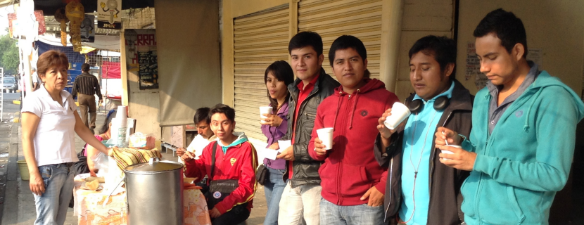
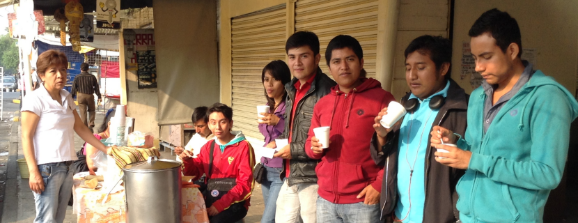
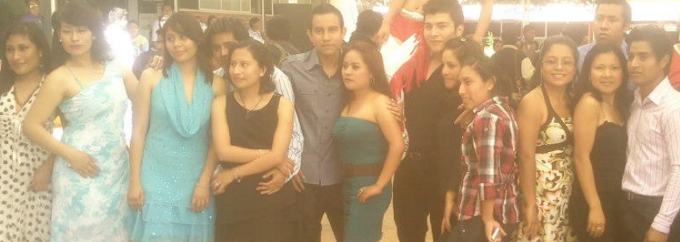
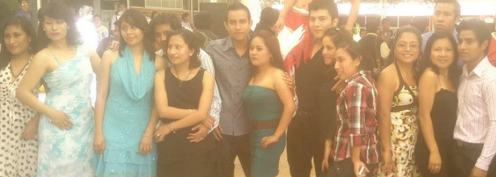

Tu!
 


 

Eres un chava complicada y eso me agrada, aparte algo especial aunque no te guste que te digan así pero sabes que eres muy especial desde tu manera de como comer y si no te gusta no lo pruebas para nada, a veces algo enferma con la limpieza y el orden todo debe estar en su lugar porque sino no estas cómoda.
Siempre tienes ideas muy locas o casi descabelladas que me sorprenden pero no imposibles te falta un poco de decisión para llevarlas a cabo pero de que puedes, puedes.
Siempre envueltas en deudas que incrementan día tras día y con tu sueño lejano de irte a trabajar a un lugar muy lejano digamos (Puebla) jaja y ser libre de hacer lo que quieras.
En ciertos momentos divagas en la realidad pensando en muchas cosas o problemas que tu misma a veces ocasiones pero tu frase es “Perdón me fui”.
Me sorprende que hagas tantas cosas en tan poco tiempo.
Ranking de canciones
1.- Todo cuenta - Dld
2.- Loco - Enrique Iglesias
3.- Y te vas - Banda Carnaval
4.- Rival - Romeo Santos
5.- Nada nuevo bajo el sol - Bunkers
6.- Beautiful - Gustavo Cerati